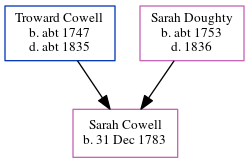

Anthony Balinskas 1895 -
| [ Calendar ] | [ Surnames Index ] | [ Census Index ] | [ Family History ]Anthony Balinskas was born in 1895 and had 2 children with Julia Dauparos: Anthony M. and Anna S..
Children
- Anthony M. was born on Mar 26, 1931
- Anna S. was born in 1925
Family Tree
Generated by ged2site. Last updated on Jun 13, 2024